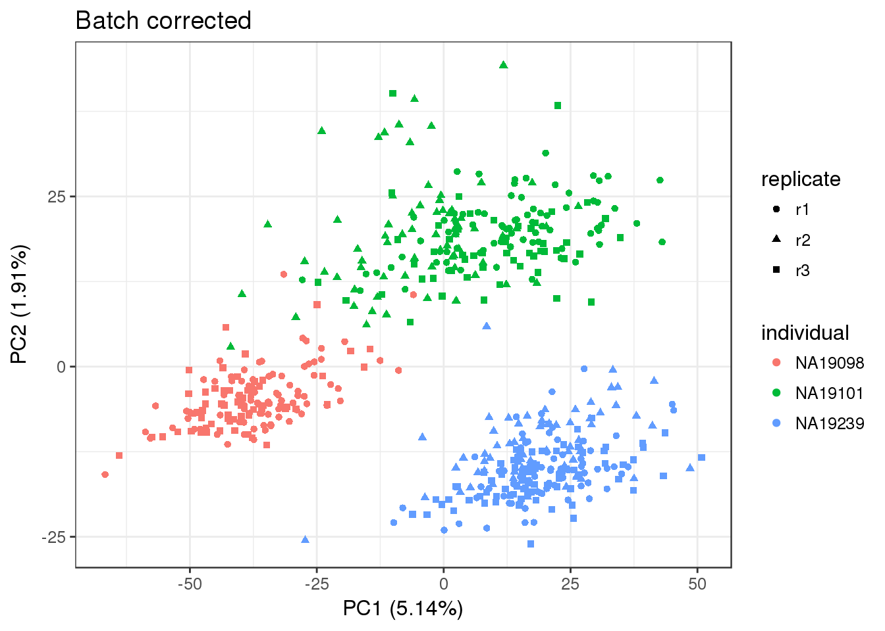

Last updated: 2017-02-16
Code version: 4c2c032
library("limma")
library("edgeR")
library("ggplot2")
theme_set(theme_bw(base_size = 12))
source("../../singleCellSeq/analysis/functions.R")
library("Humanzee")This files uses a mixed effect model to remove technical batch effects. The modeling function is adapted from the package limma and is implemented in the package Humanzee.
Model between-sample correlations in gene expression within C1 replicates. Fixed effect for individual and random effect for batch.
Create the following file and write it to the data repo of this github.
molecules-final.txt - molecules in high quality cells after removing unwanted variation with mixed model
anno_filter <- read.table("../data/annotation-filter.txt", header = TRUE, stringsAsFactors = FALSE)
head(anno_filter) individual replicate well batch sample_id
1 NA19098 r1 A01 NA19098.r1 NA19098.r1.A01
2 NA19098 r1 A02 NA19098.r1 NA19098.r1.A02
3 NA19098 r1 A04 NA19098.r1 NA19098.r1.A04
4 NA19098 r1 A05 NA19098.r1 NA19098.r1.A05
5 NA19098 r1 A06 NA19098.r1 NA19098.r1.A06
6 NA19098 r1 A07 NA19098.r1 NA19098.r1.A07Input Poisson GLM transformed molecule counts per million.
molecules_cpm_trans <- read.table("../data/molecules-cpm-trans.txt", header = TRUE, stringsAsFactors = FALSE)
stopifnot(ncol(molecules_cpm_trans)==nrow(anno_filter), colnames(molecules_cpm_trans)==anno_filter$sample_id)Because the “Poisson transformation with ERCC controls” was not sufficient to remove all unwanted technical variation, we used a mixed model to correct for batch effects.
We adapted limma’s algorithm for estimating variance components due to random effects (origonally for array data). This analysis operates under the assumption that biological replicates (or batched within the individuals in this case) share similar correlation across genes. Moreover, the anaylsis permits negative corelation between replicates.
For every single gene, we will fit a mized model assuming differences between batches are not individual-specific as follows
\[ y_{ijk} = \mu + \alpha_i + b_j + \epsilon_{ijk} \],
where \(y_{ijk}\) is the log2 counts-per-million (cpm) for any gene in individual \(i\), batch \(j\), and cell \(k\), \(\mu\) is the gene-specific expression level across all cells, \(\alpha_i\) is the expression level specific to individual \(i\), \(b_j\) is batch \(j\)’s deviation of expression level from gene-specific expression levels, and \(\epsilon_{ijk}\) is the models’ residual error.
We assume that \(b_j\) follows a normal distribution with \(b_j \sim N(0, \sigma^2_b)\) for \(j = 1, \dots, 9\), and \(\epsilon_{ijk} \sim N(0, \sigma^2_\epsilon)\) for \(i = 1, 2, 3; j = 1, \dots, 9; and k = 1, \dots, n_{ij}\), where \(n_ij\) denotes the number of cells in individual \(i\), batch \(j\).
Create design matrix and compute a consensus correlation using limma’s duplicateCorrelation function.
block <- anno_filter$batch
#model.matrix= creates design matrix, expanding variables and interactions
design <- model.matrix(~ 1 + individual, data=anno_filter)dup_corrs <- duplicateCorrelation(molecules_cpm_trans, design = design, block = block)Fit a mixed model with the 9 batches being the random effect.
gls_fit <- Humanzee::ruv_mixed_model(molecules_cpm_trans,
ndups = 1,
design = design,
block = block,
correlation = dup_corrs$cons)Compute expression levels after removing variation due to random effects.
# %*% multiply the matricies
molecules_final <- t(design %*% t(gls_fit$coef) ) + gls_fit$residOutput clean data.
colnames(molecules_final) <- colnames(molecules_cpm_trans)
write.table(round(molecules_final, digits = 6), "../data/molecules-final.txt", quote = FALSE,sep = "\t", col.names = NA)pca_final <- run_pca(molecules_final)
pca_final_plot <- plot_pca(pca_final$PCs, explained=pca_final$explained, metadata=anno_filter, color="individual", shape="replicate") + labs(title="Batch corrected")
pca_final_plot
sessionInfo()R version 3.3.2 (2016-10-31)
Platform: x86_64-redhat-linux-gnu (64-bit)
Running under: Scientific Linux 7.2 (Nitrogen)
locale:
[1] LC_CTYPE=en_US.UTF-8 LC_NUMERIC=C
[3] LC_TIME=en_US.UTF-8 LC_COLLATE=en_US.UTF-8
[5] LC_MONETARY=en_US.UTF-8 LC_MESSAGES=en_US.UTF-8
[7] LC_PAPER=en_US.UTF-8 LC_NAME=C
[9] LC_ADDRESS=C LC_TELEPHONE=C
[11] LC_MEASUREMENT=en_US.UTF-8 LC_IDENTIFICATION=C
attached base packages:
[1] parallel grid stats graphics grDevices utils datasets
[8] methods base
other attached packages:
[1] Humanzee_0.1.0 devtools_1.12.0 doMC_1.3.4
[4] iterators_1.0.8 foreach_1.4.3 scales_0.4.1
[7] VennDiagram_1.6.17 futile.logger_1.4.3 testit_0.6
[10] data.table_1.10.0 biomaRt_2.30.0 tidyr_0.6.1
[13] gridExtra_2.2.1 lme4_1.1-12 Matrix_1.2-7.1
[16] edgeR_3.16.5 limma_3.30.9 cowplot_0.7.0
[19] ggplot2_2.2.1 dplyr_0.5.0 workflowr_0.3.0
[22] rmarkdown_1.3
loaded via a namespace (and not attached):
[1] statmod_1.4.27 locfit_1.5-9.1 splines_3.3.2
[4] lattice_0.20-34 colorspace_1.3-2 htmltools_0.3.5
[7] stats4_3.3.2 yaml_2.1.14 XML_3.98-1.5
[10] nloptr_1.0.4 withr_1.0.2 DBI_0.5-1
[13] BiocGenerics_0.20.0 lambda.r_1.1.9 plyr_1.8.4
[16] stringr_1.1.0 munsell_0.4.3 gtable_0.2.0
[19] codetools_0.2-15 evaluate_0.10 memoise_1.0.0
[22] labeling_0.3 Biobase_2.34.0 knitr_1.15.1
[25] IRanges_2.8.1 AnnotationDbi_1.36.1 Rcpp_0.12.9
[28] backports_1.0.5 S4Vectors_0.12.1 digest_0.6.12
[31] stringi_1.1.2 rprojroot_1.2 tools_3.3.2
[34] bitops_1.0-6 magrittr_1.5 lazyeval_0.2.0
[37] RCurl_1.95-4.8 tibble_1.2 RSQLite_1.1-2
[40] futile.options_1.0.0 MASS_7.3-45 rstudioapi_0.6
[43] assertthat_0.1 minqa_1.2.4 R6_2.2.0
[46] git2r_0.18.0 nlme_3.1-128 This site was created with R Markdown